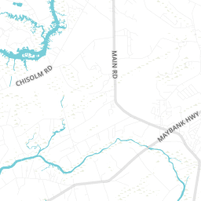
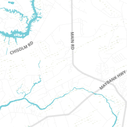

It seems like there’s a Thai food restaurant on every corner in New York. However, many of these establishments serve mild and bland food (*not enough chillies and/or fish sauce). Since I arrived in NY in 2011, I've ventured through the five boroughs to seek the most authentic Thai dishes. I'm not talking about Pad Thai or Green Curry– I'm talking about fermented fish, blood noodles, and gizzards! So here is a list of my go-to places in town. Spread the love, and always remember to add more pepper